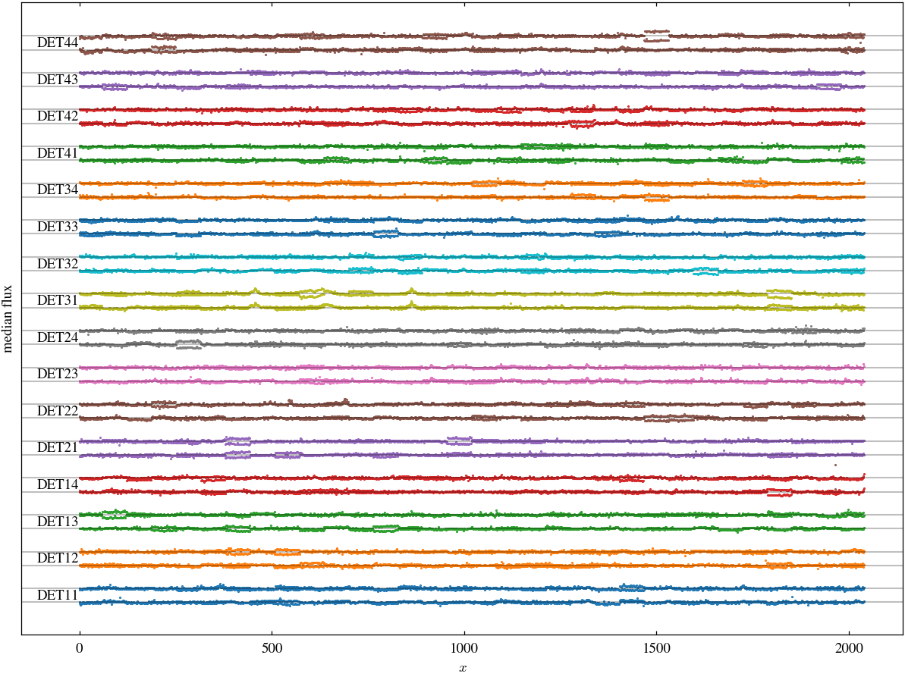
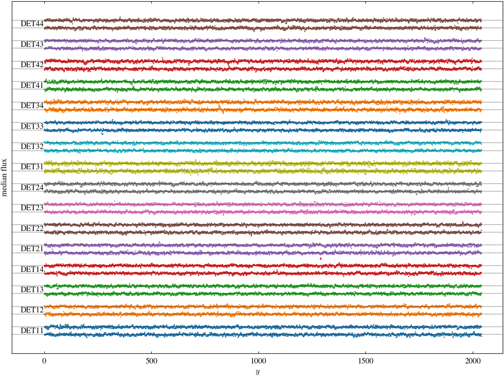
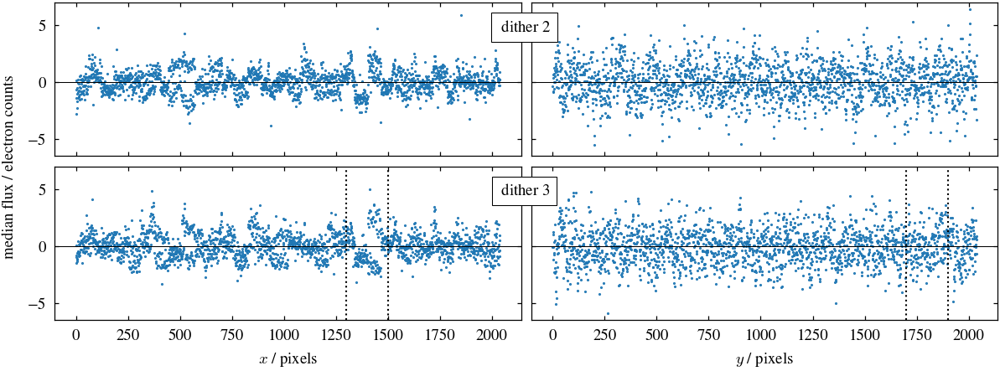

plt.style.use("nicl.euclid.v1nicl")
plt.rcParams["font.size"] = 9 # this is a better match to the text in the paperdebanding
Investigating and removing banding artefacts from a set of observations.
For now we perform this work on the original L2 data. However, it would probably be best to do this step after the atemporal background subtraction, and possibly after persistence removal.
path = default_data_path("Q1_R1", "NIR")
zarr_path = default_data_path("Q1_R1_processed_test", "zarr", "NIR")
outpath = default_data_path("Q1_R1_processed_test", "debanding")obs_id = 2683
dithers = ["2", "3"]
detector = "DET11"
filter = "H"To measure the banding we mask objects in the data, apply a filter to remove large scale variations, and then take the median of the data in the x and y directions.
ds, wcs, zp = read_all_zarr_refs(zarr_path)data = ds["SCI"].sel(filter=filter, observation_id=obs_id, dither=dithers)data = data.persist()filtered_data = filter_and_mask_data(data).persist()med_x = filtered_data.median("x")
med_x -= med_x.median("y")
med_y = filtered_data.median("y")
med_y -= med_y.median("x")Examples
Let’s examine the banding for an example observation.
def plot_banding_all(med, dim, filter, obs_id, dithers=["2", "3"]):
d0 = med.sel(dither=dithers[0])
d0med = d0.median(dim)
d1 = med.sel(dither=dithers[1])
d1med = d1.median(dim)
fw, fh = plt.rcParams["figure.figsize"]
fig, ax = plt.subplots(
figsize=(2 * fw, 2 * fh), layout="compressed", sharex=True, sharey=True
)
ax.plot(d0.T + np.arange(16) * 40, ".", markersize=1)
ax.axes.set_prop_cycle(None)
ax.plot(d1.T + np.arange(16) * 40 + 15, ".", markersize=1)
for i, m in enumerate(d0med.values + np.arange(16) * 40):
ax.axhline(m, alpha=0.25, color="k")
det = d0.detector.values[i]
ax.text(-1, m, det, va="bottom", ha="right", fontsize="medium", color="k")
for m in d1med.values + np.arange(16) * 40 + 15:
ax.axhline(m, alpha=0.25, color="k")
ax.set_xlabel(f"${dim}$")
ax.set_yticks([])
ax.set_ylabel("median flux")
ax.set_xlim(xmin=-150)
outpath.mkdir(parents=True, exist_ok=True)
plt.savefig(outpath / f"banding_{dim}_{filter}_{obs_id}.pdf")The following plots show the median flux across one axis as a function of the other axis. A pair of lines is shown for each detector (labelled on the left). Within each pair, the two lines show the behaviour for two different dithers. An arbitrary offset has been added to the y-axis.
plot_banding_all(med_y, "x", filter, obs_id, dithers=dithers)
There are some variations in the median flux as we move along the y-axis, which appear as horizontal stripes in the images. These typically have relatively smooth edges. The features do not persist across dithers.
plot_banding_all(med_x, "y", filter, obs_id, dithers=dithers)
There are some variations in the median flux as we move along the x-axis, which appear as vertical stripes in the images. However, there are distinctive ‘bifurcations’ in bands ~50 pixels wide. In these bands the median flux oscillates between neighbouring columns. While some of these features persist across dithers, others do not, suggesting they come and go on the timescale of several minutes.
tartan_zoom_limits = ((1300, 1500), (1700, 1900))def plot_banding(med_x, med_y, filter, obs_id, dithers=["2", "3"]):
d0x = med_x.sel(dither=dithers[0])
d1x = med_x.sel(dither=dithers[1])
d0y = med_y.sel(dither=dithers[0])
d1y = med_y.sel(dither=dithers[1])
fw, fh = plt.rcParams["figure.figsize"]
fig, ax = plt.subplots(
2, 2, figsize=(2 * fw, fh), layout="compressed", sharex=True, sharey=True
)
ax[0, 0].plot(d0y.T[:, 0], ".", markersize=1)
ax[0, 0].axes.set_prop_cycle(None)
ax[1, 0].plot(d1y.T[:, 0], ".", markersize=1)
ax[0, 0].axhline(0, color="k", lw=0.5)
ax[1, 0].axhline(0, color="k", lw=0.5)
ax[0, 1].plot(d0x.T[:, 0], ".", markersize=1)
ax[0, 1].axes.set_prop_cycle(None)
ax[1, 1].plot(d1x.T[:, 0], ".", markersize=1)
ax[0, 1].axhline(0, color="k", lw=0.5)
ax[1, 1].axhline(0, color="k", lw=0.5)
ax[1, 0].set_xlabel("$x$ / pixels")
ax[1, 1].set_xlabel("$y$ / pixels")
ax[1, 0].axvline(tartan_zoom_limits[0][0], color="k", ls=":")
ax[1, 0].axvline(tartan_zoom_limits[0][1], color="k", ls=":")
ax[1, 1].axvline(tartan_zoom_limits[1][0], color="k", ls=":")
ax[1, 1].axvline(tartan_zoom_limits[1][1], color="k", ls=":")
fig.text(
0.524,
0.92,
r"$\,$dither 2",
ha="center",
va="center",
bbox=dict(facecolor="white", edgecolor="k", lw=0.5),
)
fig.text(
0.524,
0.485,
r"$\,$dither 3",
ha="center",
va="center",
bbox=dict(facecolor="white", edgecolor="k", lw=0.5),
)
fig.supylabel("median flux / electron counts", fontsize="medium", y=0.55)
outpath.mkdir(parents=True, exist_ok=True)
plt.savefig(outpath / f"banding_{filter}_{obs_id}.pdf")plot_banding(med_x, med_y, filter, obs_id, dithers=dithers)
Correction
We can correct the banding by subtracting the median flux in the x and y directions.
banding_correction
def banding_correction(
data, rows:bool=True, cols:bool=True, max_size:int=200
):
Call self as a function.
zoom_limits = ((510, 810), (300, 600))
def plot_zoom_box(ax, i):
ax[0, i].plot(
[
zoom_limits[0][0],
zoom_limits[0][1],
zoom_limits[0][1],
zoom_limits[0][0],
zoom_limits[0][0],
],
[
zoom_limits[1][0],
zoom_limits[1][0],
zoom_limits[1][1],
zoom_limits[1][1],
zoom_limits[1][0],
],
"k-",
)
def no_ticks(ax):
ax.set_xticks([])
ax.set_yticks([])
def plot_dither(ax, i, img, vmin, vmax, cmap, interpolation):
aximg = ax[0, i].imshow(
img,
vmin=vmin,
vmax=vmax,
origin="lower",
cmap=cmap,
interpolation=interpolation,
)
plot_zoom_box(ax, i)
ax[1, i].imshow(
img[
zoom_limits[1][0] : zoom_limits[1][1], zoom_limits[0][0] : zoom_limits[0][1]
],
vmin=vmin,
vmax=vmax,
origin="lower",
cmap=cmap,
interpolation=interpolation,
)
no_ticks(ax[0, i])
no_ticks(ax[1, i])
return aximg
def plot_example(
example_data, corrected_data, vmin=60, vmax=90, cmap=None, interpolation=None
):
fig, ax = plt.subplots(2, 3, figsize=(12, 12), width_ratios=(1, 1, 0.05))
aximg = plot_dither(
ax,
0,
example_data,
vmin=vmin,
vmax=vmax,
cmap=cmap,
interpolation=interpolation,
)
plot_dither(
ax,
1,
corrected_data,
vmin=vmin,
vmax=vmax,
cmap=cmap,
interpolation=interpolation,
)
plt.colorbar(aximg, cax=ax[0, -1])
ax[1, -1].set_visible(False)
plt.tight_layout()
plt.savefig(outpath / "example.pdf")Here we show an example. Note that in the pipeline the debanding is done after the persistence correction.
example_data = ds["SCI"].sel(
# Original example:
filter="H",
observation_id=2683,
dither="3",
detector="DET11",
# Example containing large cluster:
# filter="J", observation_id=2712, dither=2, detector="DET23"
)example_data = example_data.persist()example_filtered_data = filter_and_mask_data(example_data, scale=200).as_numpy()plot_example(example_data - 75, example_filtered_data, vmin=-15, vmax=15)
correction = banding_correction(example_data).persist()plot_example(example_data - 75, correction, vmin=-15, vmax=15)
correction.as_numpy().median()<xarray.DataArray ()> Size: 8B
array(0.)
Coordinates:
detector <U5 20B 'DET11'
dither <U1 4B '3'
filter <U1 4B 'H'
observation_id int64 8B 2683corrected_data = example_data - correction
corrected_filtered_data = example_filtered_data - correction
corrected_filtered_data = corrected_filtered_data.where(~correction.isnull())outpath.mkdir(parents=True, exist_ok=True)
fits.writeto(outpath / "corrected_data.fits", corrected_data.to_numpy(), overwrite=True)
fits.writeto(
outpath / "corrected_filtered_data.fits",
corrected_filtered_data.to_numpy(),
overwrite=True,
)
fits.writeto(outpath / "data.fits", example_data.to_numpy(), overwrite=True)
fits.writeto(
outpath / "filtered_data.fits", example_filtered_data.to_numpy(), overwrite=True
)plot_example(example_data, corrected_data)
plot_example(example_data - 75, corrected_filtered_data, vmin=-15, vmax=15)